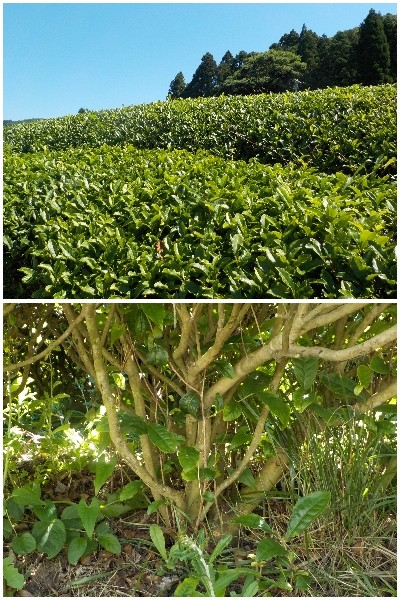
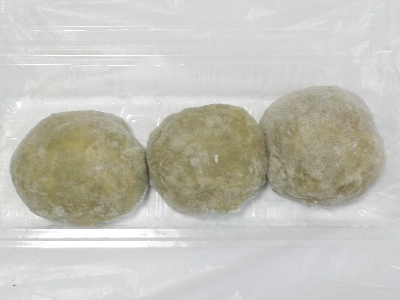
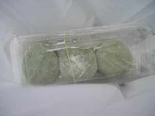

島根県出雲市唐川町191
更新日 : 2026/05/31

チャノキの根元がどうなっているのかが見たくて新茶まつりに行きました。1か所から太い枝が何本も立ち上がってるんですね。どの位置で枝分かれして、上部一面が緑になるのかが気になっていました。

会場で餅つきしていた茶餅です。ちょっと形がゴツゴツしてますね。お餅とおはぎの中間くらいの柔らかさで、まとまりがあるけどふんわりしていました。
ふんわりなので、お茶の風味が感じられるし餅ほど重くないので1つが食べやすかったです。いい商品ですね。ちょっと忘れられない味だって思いました。
他の企業も真似して作って欲しいな。こんなの餅じゃないとか、おはぎじゃないとか否定派が出るのかな？でもそれ言ったら饅頭みたいな餅や一塊みたいなおはぎも否定しちゃうんだけどな。
今日はお茶と風月堂の唐川まんじゅうも買って帰りました。
更新日 : 2009/5/31
初めて唐川の新茶まつりに行きました。
そんなに広い所じゃないですが、シャトルバスがあるので駐車場の心配はいらなかったです。シャトルバスを使わないでも、会場付近の路上が広いので駐車スペースがいっぱいありました。思ったよりも山深くなかったので、アクセスはしやすかったです。
（お昼過ぎに行ったので、ちょっと空いたのかもしれません。）
山の中なので、テレビCMで見るような辺り一面茶畑って景色ではないですけど、山里って感じの雰囲気がしました。
「お茶の里唐川館」って施設と広場で、イベントや特産物等の販売をしていました。

これは会場で実演販売していた茶もちです。
ヨモギもちの様に見えますが、お茶なので苦味が少なく、さっぱり感がありました。美味しかったです。他にも茶そばと、茶めしを食べて帰りました。
後、大阪ナンバーのたこ焼き屋さん、松江のカラコロのジェラート、野菜、お茶、駄菓子なんかが販売してました。私は買い物が中心だったので、買い物の列に並んでる時間が長かったまつりでした。
【おいしいものを食べよう。】【たくさん寝よう。】
【ソロ活をしよう!】【季節感のあることをしよう。】【動画視聴はほどほどに。】【当サイトの全てのコンテンツは無断転載禁止です。】